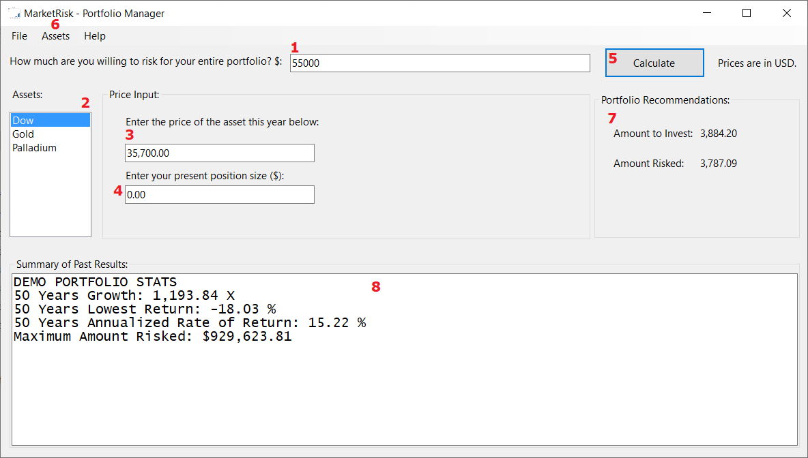

MarketRisk - Quick Reference
Portfolio Manager

- Enter your desired maximum risk, in USD.
- Select an asset for which to enter price information.
- Enter the price of the selected asset, in USD.
- Enter your present position size, or 0 if you do not own that asset.
- Click Calculate once you have entered price information for all your selected assets.
- Choose assets you want to own in your portfolio, or best configuration.
- After you've clicked Calculate, your recommended position size and amount risked will be shown here.
- A demo portfolio starting in 1929 is shown here, with the last 50 years' performance. The annualized rate of return shows you how much you would have earned every year.
Workflow Steps
- Select your asset combination from the Assets menu.
- Click on the asset in the list box (#2) and enter its price in box #3 and your present position in box #4. Do this for all assets in box #2.
- Tell the application how much you want to risk, in box #1.
- Click Calculate.
- Navigate through your assets or generate a report to view recommendations. Create a report by going to the File menu and choosing Export HTML Report.